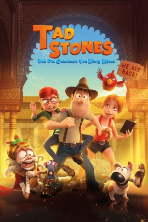

#11018 Tad Stones und das Geheimnis von Köng Midas
Alternativ: Tad the Lost Explorer and the Secret of King Midas (Englischer Titel)
 
 IMDB-Wertung: 6.2 / 10
IMDB-Wertung: 6.2 / 10  Metascore: 0
Metascore: 0 
Tad Stones (Stimme im Original: Óscar Barberán) ist ein liebenswerter Bauarbeiter, der lieber Archäologe und Schatzsucher wäre. Sein großer Traum ist es, Abenteuer zu erleben und dabei die Welt zu sehen. Eines Tages bekommt er tatsächlich die Gelegenheit dazu: Sara Lavroff (Michelle Jenner), eine geschätzte Archäologin und Tads heimlicher Schwarm, braucht seine Hilfe bei einem Rätsel. Sie möchte herausfinden, was es mit der mysteriösen Halskette von König Midas auf sich hat. Sara und Tad ziehen los, sind aber nicht als einzige hinter der Kette her. Der Millionär Jack Rackham (Miguel Ángel Jenner) will das Schmuckstück ebenfalls – und entführt kurzerhand Sara! Die Zeit läuft: Tad, sein Hund Jeff, Saras Assistentin Tiffany (Adriana Ugarte) und eine tollpatschige Mumie (Luis Posada) heften sich an Rackhams Fersen. Sie wollen die Halskette, aber vor allem will Tad seine entführte Liebe retten…
Jahr: 2017
Dauer: 84 Minuten
FSK: 6
Land: Spanien Studio: Paramount PicturesTonspuren: DD5.1 - ,
Untertitel: Deutsch, Englisch,
Auflösung: 1080p (1920x816) Größe: 4362 MB
Genre: Komödie, Abenteuer, Fantasy, Animation/Trick, Familie
Regisseur: David Alonso, Enrique Gato
Drehbuch: Javier López Barreira, Jordi Gasull, Javier López Barreira, Neil Landau, Jordi Gasull
Soundtrack: Zacarías M. de la Riva
Darsteller:
 Michelle Jenner als Sara Lavrof
Michelle Jenner als Sara Lavrof Adriana Ugarte als Tiffany
Adriana Ugarte als Tiffany- Miguel Ángel Jenner als Rackham
- José Corbacho als Taxista
- Roser Batalla als Secuaz Mujer
 Trevor White als Tad
Trevor White als Tad- Joseph Balderrama als Mummy / Construction Worker 1 / Construction Worker 2 / Construction Worker 3 / Henchman 1 / Henchman 2 / Henchman 3
 Ramon Tikaram als Rackham
Ramon Tikaram als Rackham- Gemma Whelan als Tiffany / Henchwoman
 Lewis Macleod als Taxi Driver
Lewis Macleod als Taxi Driver- Óscar Barberán als Tadeo Jones
- Luis Posada als Momia
- Rafael Calvo als Obrero 1
- David Brau als Obrero 2
- Masumi Mutsuda als Obrero 3
- Francesc Belda als Secuaz musculoso / Capatáz
- Pablo Gómez als Marinero
- Pau López als Marinero 2
- Manuel Osto als Anticuario
- Pep Papell als Secuaz 1
- Xavi Fernández als Secuaz Xicote
- Isabel Valls als Tiffany
- Juan Carlos Gustems als Rackham
- Miquel Bonet als Obrer 1
- Jordi Basté als Mariner
- Toni Clapés als Mariner 2
- Jordi Brau als Antiquari
- Alex Kelly als Sara Lavrof
Datei: X:\Kinder Collections\Tad Stones\Tad Stones und das Geheimnis von Köng Midas (2017, FSK6, 1920x816).mkv seit 17.04.2019
Festplatte: Kinder-Filme+Trick
 Alle Filme aus Gruppe 'Kinder Collections\Tad Stones'
Alle Filme aus Gruppe 'Kinder Collections\Tad Stones'